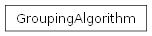

groupbuilder.core.algorithm module
Group Algorithm Module
This module implements efficient algorithms for generating optimal group combinations.

|
Algorithm for generating groups of people with unique combinations. |
- class groupbuilder.core.algorithm.GroupingAlgorithm(config)[source]
Bases:
objectAlgorithm for generating groups of people with unique combinations.
This class implements an algorithm to generate rounds of groups where: 1. Each round contains groups of equal size 2. Each person appears exactly once per round 3. The algorithm attempts to maximize the number of unique group combinations
before repeating any previously formed groups
It uses bitmasking for efficient group intersection checks and backtracking for finding valid group combinations.
__init__(config)Initialize the GroupingAlgorithm with the given configuration.
Get the most recently generated round.
Get all generated rounds.
Generate the next round of groups.
Get the number of remaining rounds that can be generated.
Get the maximum number of rounds that can be generated.
get_ops_needed(amount_people, group_size)Calculate an estimate of the number of operations needed to generate all possible unique round combinations, along with the number of combinations and an approximate amount of RAM needed based on an internal regression model.
- __add_next_group(old_group, old_working_set, outcast, self_id, max_id, not_found, bitmask_cache=None, all_person_mask=None)
Recursively add groups to create a valid round.
This is the core backtracking algorithm that builds valid rounds by: 1. Finding a group that doesn’t overlap with existing groups 2. Adding it to the current round 3. Recursively trying to complete the round with remaining groups 4. Backtracking if the current path doesn’t lead to a solution
- Parameters:
old_group (
list[frozenset]) – Current list of selected groups for this roundold_working_set (
list[frozenset]) – Remaining groups to consideroutcast (
list[frozenset]) – Groups that were rejected in this branchself_id (
int) – Current recursion depth (group number)max_id (
int) – Maximum recursion depth (total groups needed)not_found (
bool) – Flag indicating if a solution hasn’t been found yetbitmask_cache (
dict[frozenset,int]) – Cache of bitmasks for each group for faster intersection checksall_person_mask (
int) – Bitmask representing all people that should be in a round
- Raises:
StopIteration – If no more rounds can be generated
- Returns:
Tuple of (completed groups, remaining groups, rejected groups, solution_not_found flag)
- Return type:
tuple[list[frozenset], list[frozenset], list[frozenset], bool]
- __generate_all_possible_combs()
Generate all possible group combinations.
Creates all possible group combinations of size group_size from the total number of people. If the total number is not divisible by group size, placeholder people (-1) are added and then removed from the final combinations.
Sets: - self.__all_combinations: All possible unique group combinations - self._max_rounds: Maximum number of rounds that can be generated
- Return type:
None
- __set_groups_per_round()
Calculate the number of groups needed per round.
Adjusts for cases where the number of people is not evenly divisible by the group size by adding virtual placeholders.
- Return type:
None
- _get_max_possibilities()[source]
- Return type:
int
Note
Method is deprecated, because it is not accurate anymore, the cause for this is that it does not take into account that the algorithm is not allowed to generate the same group twice.
Calculate an upper bound on the number of rounds possible.
This method computes an approximate maximum number of rounds that can be generated based on the total number of unique groups that can be formed and the number of groups per round. The calculation involves adjusting the number of people to ensure that it is divisible by the group size by adding placeholders if necessary.
Given
\(P\): Total number of people.
\(G\): Group size.
\(\text{remainder}\): Number of placeholders (added if \(P\) is not divisible by \(G\)).
\(P_{adjusted}\): Total number of participants (including placeholders).
\(R\): The number of groups formed in a round.
\(\text{total_groups}\): The product of binomial coefficients for each group.
Formula Steps
Adjustment of the Number of People
- Calculate the remainder when the number of people is divided by the group size:
- \[\text{remainder} = P \mod G\]
- If the remainder is not zero, increase the number of people by the missing value to allow even group division:
- \[P_{adjusted} = P + (G - \text{remainder}) \quad \text{if } \text{remainder} \neq 0\]
- If there is no remainder, the number of people remains unchanged:
- \[P_{adjusted} = P\]
Calculation of Groups per Round
- The number of groups per round is given by:
- \[R = \frac{P_{adjusted}}{G}\]
Total Number of Unique Groups (Combinations)
- The number of possible unique groups is given by the binomial coefficient:
- \[\text{total_groups} = \binom{P_{adjusted}}{G}\]
Maximum Number of Rounds
- The upper bound for the number of rounds is given by:
- \[\text{max_rounds} = \frac{\text{total_groups}}{R}\]
This formula calculates the total number of unique round combinations based on the number of participants and the group size, taking into account any necessary placeholders.
- generate_next_round()[source]
Generate the next round of groups.
This method attempts to find a valid set of groups for the next round where each person appears exactly once and no group has appeared in previous rounds if possible.
Uses bitmasking for efficient group intersection checks and implements a backtracking algorithm to find valid group combinations.
- Raises:
StopIteration – When no more rounds can be generated
- Return type:
None
- get_all_rounds()[source]
Get all generated rounds.
- Returns:
Dictionary mapping round indices to lists of groups
- Return type:
dict[int, list[frozenset[int]]]
- get_max_rounds()[source]
Get the maximum number of rounds that can be generated.
- Returns:
Maximum number of rounds
- Return type:
int
- static get_ops_needed(amount_people, group_size)[source]
Calculate an estimate of the number of operations needed to generate all possible unique round combinations, along with the number of combinations and an approximate amount of RAM needed based on an internal regression model.
Note
This method calculates the number of operations needed to generate all possible unique round combinations based on the total number of people and the group size. The calculation involves determining the number of possible combinations, the worst-case backtracking scenario, and an estimate of RAM usage.
Complexity Formula
\(n\): Total number of people.
\(k\): Group size.
\[O\left(\binom{n}{k} * 2^{n/k} \right)\]Or\[O\left(\frac{n!}{k!(n-k)!} * 2^{n/k} \right)\]Given
\(\text{amount_people}\) : The total number of real people.
\(\text{group_size}\) : The size of each group.
Formula Steps
- Calculate the Number of People and Group Size
- \[n = \text{amount_people} + (\text{amount_people} \mod \text{group_size})\]\[k = \text{group_size}\]
- Calculate All Possible Combinations
- \[\text{combinations} = \binom{n}{k}\]Or\[\text{combinations} = \frac{n!}{k!(n-k)!}\]
- Generating a Round
- 2.1. Calculate the Number of Groups per Round
- \[\text{groups_per_round} = \frac{n}{k}\]
- 2.2. Calculate the Worst-Case Backtracking Scenario
- \[\text{back_track_poss} = 2^{\text{groups_per_round}}\]
- Calculate the Number of Operations Needed
- \[\text{ops_needed} = \text{combinations} * \text{back_track_poss}\]
- Calculate the Approximate Amount of RAM Needed
This estimate is determined by a regression model, based on this Website:
\[\text{ram_needed} = 0.000315294762088087 \times \text{combinations} + 200\]If \(\text{combinations} > 92000\), use the formula above. Then round \(\text{ram_needed}\) up to the nearest multiple of 10. Otherwise, default to 100 MB.
- Parameters:
amount_people (
int) – The total number of people.group_size (
int) – The size of each group.
- Returns:
A tuple containing: 1. The estimated number of operations needed (ops_needed). 2. The number of combinations. 3. The approximate amount of RAM needed (in MB).
- Return type:
tuple[int, int, int]